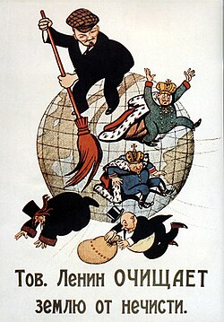

ABOUT US

The Fourth Viewpoint (Bolshevik-Leninists) is a revolutionary Marxist-Leninist-Trotskyist publication dedicated to the principles of internationalism and the struggle for socialism. We firmly believe that the working class possesses the power to overthrow the capitalist system and establish a society rooted in equality, justice, and the collective ownership of the means of production. At the same time, we remain steadfast in defending all workers' states that have emerged from socialist systems.
Furthermore, we advocate for an academic and open approach, and we welcome contributions and support from comrades across all walks of life.
Join us in our fight for a world free from oppression and exploitation. Together, we can build a society that serves the needs of the many, not the profits of the few.
CONTACT & SUBMISSIONS
Please get in touch regarding submissions: